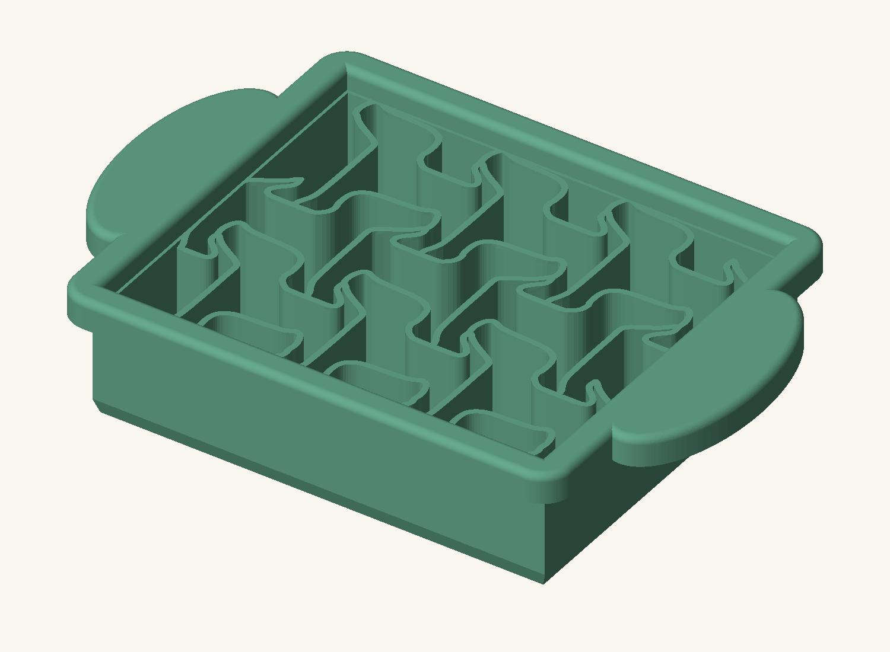
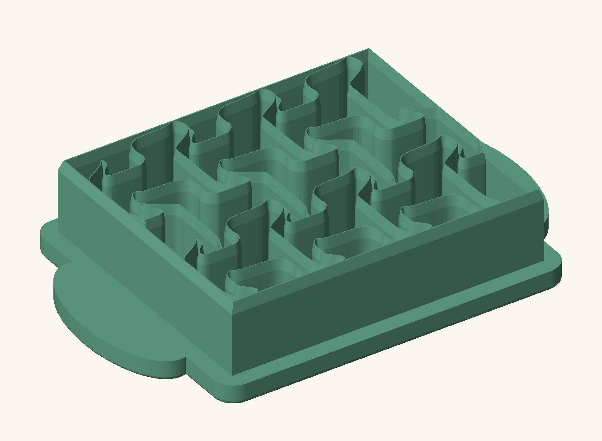
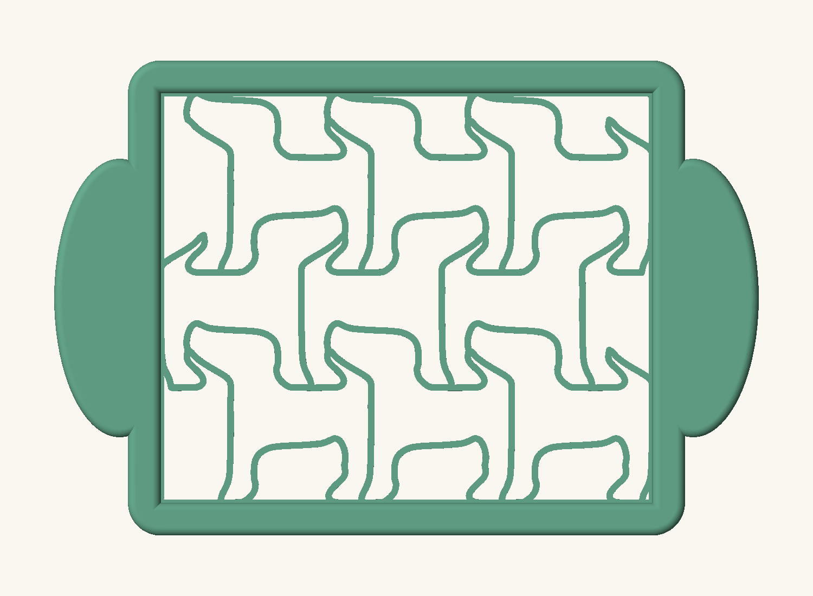
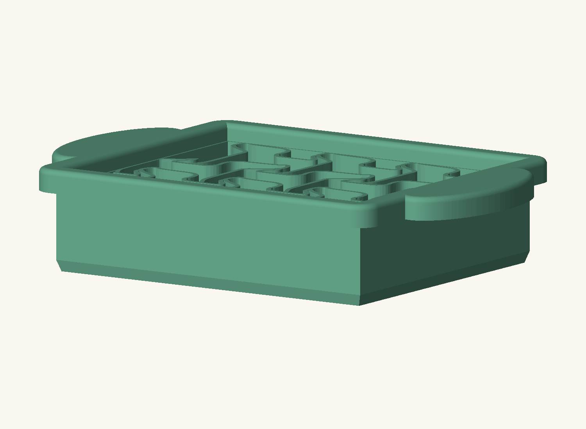

TOFU / CAD PROTOTYPE 01Nine dogs / 3 × 3
The selected repeated-dog layout, built as one connected CadQuery solid with tapered blades and broad palm grips.
Choose Measure, then drag between two points. Surface mode measures a straight 3D distance between visible surfaces. View plane measures projected distances, including gaps; use Top for plan dimensions.
120 × 100 mmnominal cutting layout
30 mmblade height
28 mmclearance below grips
0.30 mmprototype edge land
The blades taper from 1.6 mm to a 0.30 mm cutting land over the lowest 4 mm. Overall height is 36 mm. The oval grips have rounded upper edges. Finite blade thickness slightly reduces each opening relative to the flat drawing. This prototype needs a print-and-fit check before the casting mold is developed.

Frame, dog blades, and palm pads
Cutting edge view
Original nine-dog layout
Tofu clearance beneath the gripsReturn to the 2D layout review